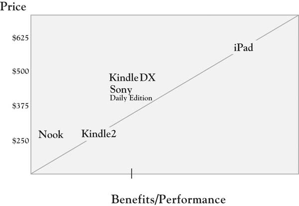

By the time you have been able to explore the value that customers seek in some depth, you will be able to come to some conclusions about your offering’s overall position as perceived by customers and potential customers. The position of a product or service is essentially a summary assessment of where it resides in the mind of customers. Much like a city resides in the space defined in a map with distances relative to other cities, your offering exists somewhere in customers’ minds in a space relative to other competitive offerings. One tool that has become increasingly common for representing competitive positions is what is called a “value map.” The first representation of a value map appeared in the work of Rangan and Kasturi in 1992.For additional discussion of this paper, see the opening of chap. 2 of Rangan and Bowman (1992). Figure 5.6 "Value Map: Selected E-book Readers" provides an example of a value map with selected e-book-reader brands. The two dimensions of the map match the dimensions of the simple “value = benefits/cost” equation. The horizontal dimension captures some the benefits provided by each offering. The vertical axis captures selling price, which, in many product and service categories, accounts for a large proportion of the customer’s cost. These dimensions might be estimated based on completely objective criteria.Richard D’Aveni (2007) of Dartmouth College has recently examined several cases that make use of objective measures of price and product features. Alternatively, they could be measured based on customer perception of price and benefits. In either case, the benefits dimension is generally an aggregation of customer perception or objective measures across many different features or dimensions. The value map in Figure 5.6 "Value Map: Selected E-book Readers" is estimated based on the objective ratings and prices provided in Consumer Reports’ latest assessment of e-book readers. The map generally reflects a positive relationship between benefits provided and price, with the Nook and the Kindle anchoring the lower left quadrant and the iPad distanced from the other brands in the upper right. The Kindle 2 (costing $260, on average) is a substantially better value than Barnes & Noble’s Nook at the same price (recall the challenges with Nook’s speed of response). The iPad far exceeds the other options on a variety of dimensions, driven by its advantages on versatility and file support. Hence, the value map illustrates the likely trade-offs between additional benefits that customers receive and the prices they may be willing to pay. Mapping a market over time is often eye-opening, as one can track the competitive changes in pricing and product features and make some judgments about what customers value, particularly if the map is based on customer perception. We introduce the value map tool here so we can use it again in Chapter 6 "Growth Strategy". There, we will use the value map to characterize the positioning implications of particular growth strategies that emerge out of the 3-Circle analysis.
Figure 5.6 Value Map: Selected E-book Readers*
* Data on which this value map is based come from Consumer Reports’ ratings of e-book readers on the dimensions of readability, versatility, responsiveness, page turn, navigation, file support, and size of viewer display, weighted equally. The figures used for the iPad are estimated based on initial reports, as the iPad was not included in the full ratings of the e-book readers.